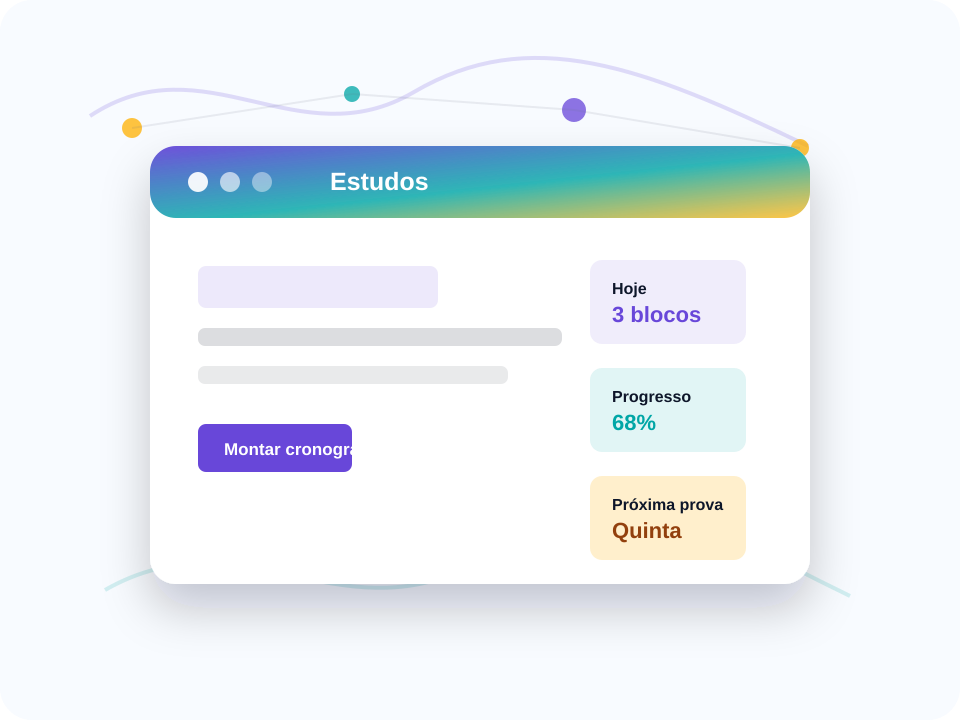

Plano por dificuldade
Matérias mais difíceis recebem mais tempo e revisões no cronograma.
Cronogramas personalizados para estudar com foco.
Uma plataforma que cria uma rotina de estudos a partir das dificuldades, do tempo disponível por dia e das datas de provas ou trabalhos.

Matérias mais difíceis recebem mais tempo e revisões no cronograma.
A rotina combina estudo, descanso e retomada do conteúdo.
Avisos ajudam o aluno a manter o ritmo até provas e entregas.
O aluno marca Redes como difícil e recebe mais blocos de revisão.
Com 1h30 por dia, o site divide estudo, pausa e retomada.
Datas de prova geram alertas e revisões próximas ao prazo.
Cronograma prioriza sub-redes, máscara e exercícios práticos antes da avaliação.
A rotina sugere 25 minutos de teoria, 5 de pausa e 25 de exercícios com correção.
Interações nesta visita: 0
Estudo, pausa e revisão.
Meta semanal em andamento.
Revisão sugerida para amanhã.